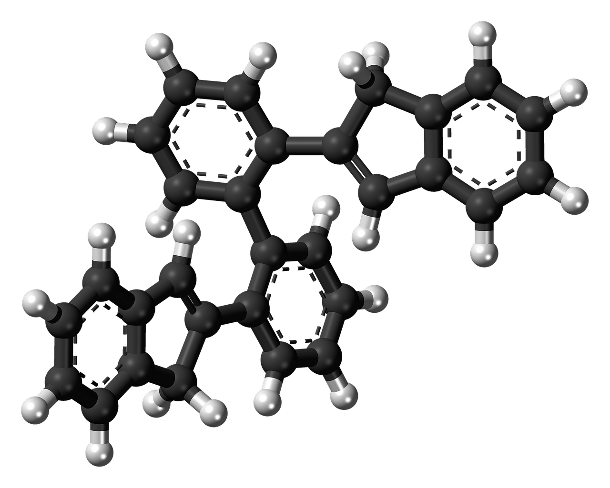
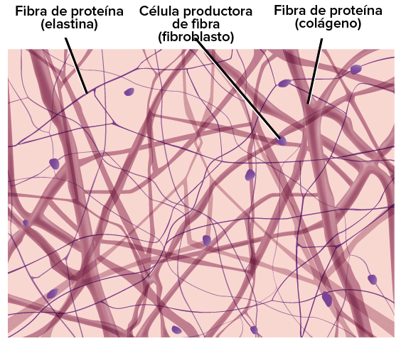

Elemento: Carbono


Propiedades |
|||||||||||
Físicas |
Químicas |
||||||||||
|
|
||||||||||
¿En qué se encuentra? |
|||||||||||
Hay ciertos compuestos conformados únicamente por átomos de carbono e hidrógeno, considerados derivados de los hidrocarburos, también estos pudiendo formar junto con átomos de otros elementos enlaces covalentes, por ejemplo, como con el alcohol, aminas, aldehídos, cetonas, etc. El carbono abunda en la naturaleza, y los componentes con enlaces carbono-carbono dominan el mundo viviente. Este elemento se encuentra en la biosfera, la atmosfera, la hidrosfera, y la litosfera, que son las cuatro mayores esferas del planeta, también al mismo tiempo presentándose en el 50% de los tejidos de los serves vivos. |
|||||||||||
| El Mundo
|
Hidrocarburos
 |
Tejidos de los seres vivos
 |
|||||||||